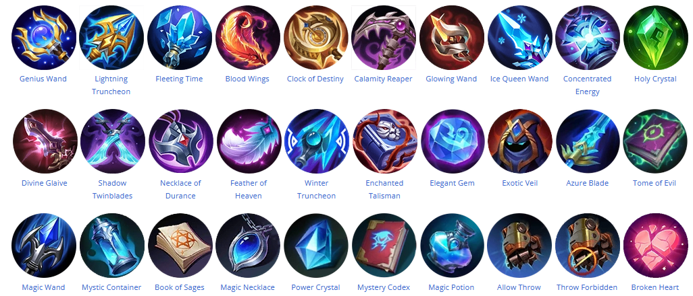

MLBB:
Es un juego multijugador online (MOBA) desarrollado y publicado por Moonton, una filial de
ByteDance
Lanzado en 2016, el juego se ha vuelto popular en el sureste de Asia y fue uno de los juegos
seleccionados para el primer evento con medallas de Esports en los Juegos del Sudeste
Asiático 2019
desarrollado en Filipinas.
Su temática es similar a los juegos en PC como LoL o Dota, pero adaptado a dispositivos
móviles. Se
caracteriza por una gran comunidad donde pueden jugar online 5 vs 5 jugadores de distintos
países.
El
juego consta de elegir un heroe/personaje donde cada heroe puede desempeñar un rol en
particular ya
sea "combatiente,mago,tanque,adc,asesino" (Estos roles de los heroes no son absolutos,
pueden mutar
o
modificar su uso segun el usuario en que posición lo quieran utilizar dentro del juego, ya
sea por
conveniencia o trollear XD)

Roles
Top Line: Es una posición solitaria, se juega en la línea superior del mapa y generalmente deben estar apartados del equipo. En generalmente son combatientes con gran capacidad de sobrevivir a gankeos y buen desempeño en el 1 vs 1.
Mid line: Los midlaners suelen ser campeones tipo magos con un gran daño magico Son heroes con poca capacidad de resistencia pero poseen un gran daño de area que favorece las team fight
Bot line-Adc: se trata de un personaje capaz de realizar mucho daño pero sin apenas habilidades de supervivencia. Su desempeño se basa en su capacidad de farmeo y el juego tardio
JG-asesino: Se considera una posición similar a ir a un carril pero que involucra matar a los "Monstruos" neutrales localizados en las zonas entre las líneas. Es el responsable de garantizar los objetivos.
Roamer-Tanque-Support: son campeones de combate cuerpo a cuerpo que sacrifican el daño a cambio de un poderoso control de masas. Tienen que prestar atencion al mapa,objetivos y otorgar vision sobre los enemigos.
Mapa
Es una herramienta fundamental para el juego, donde se reflejan las torres, da visión de posicionamiento de personajes aliados como enemigos, sirve para dar alertas y tener una vision general del estado de los carriles y sus torres
Tienda
Daño fisico:
Son items que se compran para aumentar el daño. Se los equipa a los heroes de tipo combatiente y adc generalmente
Daño magico:
Son items que se compran para aumentar el daño. Se los equipa "exclusivamente" a los heroes de rol mago
Defensa:
Son items que se compran para aumentar la defensa contra el daño del tipo físico o magico.